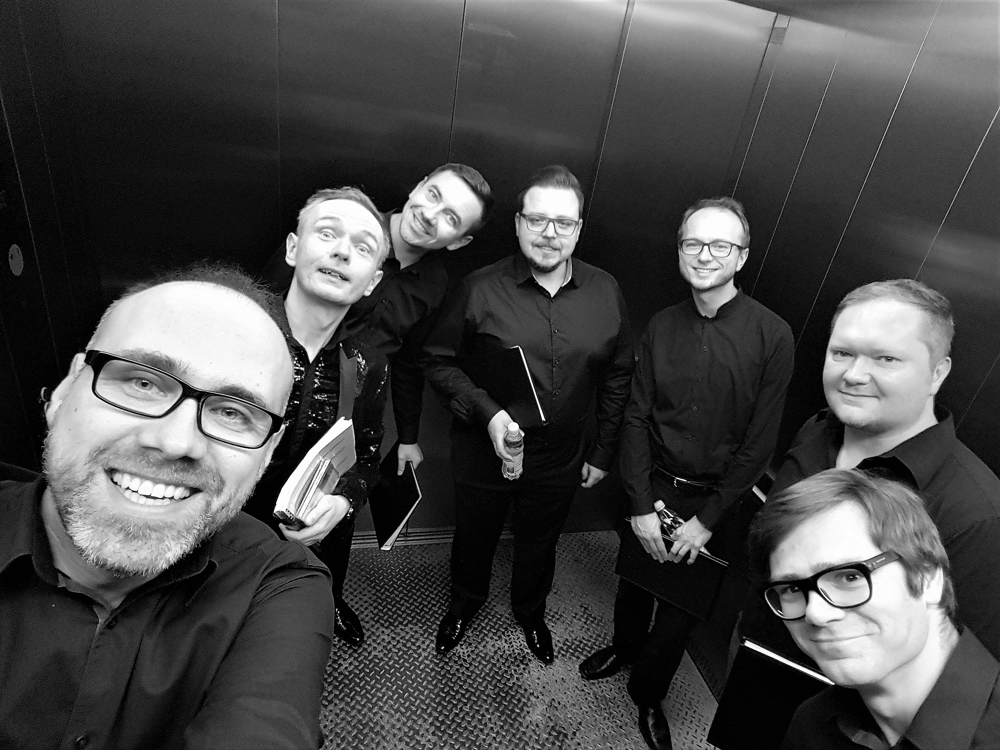

LA TEMPESTA, jeden z czołowych polskich zespołów muzyki dawnej, założony w 1998 roku w Warszawie przez swego kierownika artystycznego, Jakuba Burzyńskiego. Wykonuje muzykę renesansu, baroku, klasycyzmu i romantyzmu w nurcie wykonawstwa historycznie poinformowanego. Ma w repertuarze m.in. dzieła Josquina (Missa Pange Lingua), Palestriny (Missa Papae Marcelli), Monteverdiego (Selva Morale), Schütza (Weihnachts-Historie, Musikalische Exequien), Carissimiego (Historia di Jephte), Stradelli (Lo Schiavo liberato), Vivaldiego (Gloria, Stabat Mater, motety solowe), Bacha (Magnificat, Pasja wg św. Jana, kantaty), Haendla (Mesjasz) czy Haydna (Msza Nelsońska). Zespół występuje w głównych salach koncertowych oraz na festiwalach w kraju i za granicą (Roma Festival Barocco, Internationales H.I.F. Biber Festival Wien, Tage für Alte Musik Berlin i in.). Współpracował z Teatrem Wielkim w Poznaniu oraz Operą na Zamku w Szczecinie podczas wystawienia The Fairy Queen H. Purcella w reżyserii Michała Znanieckiego. Dokonał nagran ponad dwudziestu płyt CD, w tym serię albumów poświęconych muzyce archiwum klasztoru na Jasnej Górze. Jest gospodarzem festiwalu Barok w Radości w Warszawie, brał udział w cyklu wykonań wszystkich kantat J.S. Bacha na Uniwersytecie Warszawskim. W 2018 roku nakładem firmy DIVOX ukazał się najnowszy album CD zespołu, poświęcony muzyce Mikołaja Zieleńskiego.
